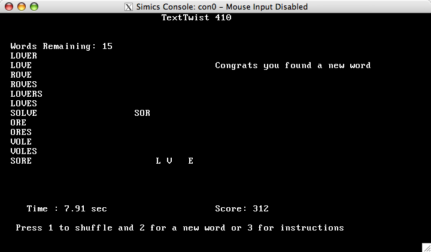

Computer Science Department |
 |
 |
 |
 |
 |
 |
 |
15-410 Project 1: TextTwist
Table of Contents
- Project Overview
- Goals
- Technical Disclaimer
- Header Files
- Important Dates
- Welcome to x86 Kernel Programming
- Kernel Programming: Always Assuming the Worst
- Privilege Levels
- Segmentation
- Communicating with Devices
- Hardware Interrupts
- Traps and Exceptions
- Configuring Interrupts
- Writing an Interrupt Handler
- Console Device Driver Specification
- Writing a Character to the Console
- Communicating with the CRTC
- Console Device Driver Interface
- Timer Device Driver Specification
- Configuring the Timer
- Timer Device Driver Interface
- Keyboard Device Driver Specification
- Interacting with the Keyboard
- Keyboard Device Driver Interface
- Floating-Point Unit (FPU)
- Skeleton Kernel
- Provided C Functions
- Testing
- Tying it All Together
- TextTwist
- Documenting
- Other Important Notes
- Testing and Debugging with Simics
- Getting Started with Simics
- The BIOS and Bootloader
- A Note on "Triple Faults"
- Grading Makefile and Dual Images
- Hand-in Instructions
- Where do I start???
- Software license notice
Project Overview
In this introductory project you will be writing three device drivers. These three device drivers will constitute a library which will be used to construct single-task "kernel applications". You will write a small game application to run on top of your library. In addition, we will provide you with a basic application that will test some aspects of your device-driver library.The first is the console device driver. The console device driver is responsible for printing characters on the screen. Without it, it would be rather difficult later in the semester to obtain feedback as to what is going on in your operating system or user applications.
The second device driver you will write is the keyboard device driver. Whenever the user presses a key, the keyboard device driver needs to find out what key it is, whether it was pushed or released, and then make that information available to the operating system. An important aspect of the keyboard device driver is that it is interrupt driven. We will take a closer look at what this means later.
The third "device driver" is the timer handler. While we do not often think of the on board PC timer as a device, it generates interrupts just like the keyboard. The timer is a critical device that will be used later in context switching between processes.
It is not possible to test these device drivers on their own. In order
to develop and test them, you will be provided with a skeleton
kernel. The kernel performs some very basic machine initialization
such as transitioning to protected mode. Once this initialization is
complete, it transfers control to the application's
kernel_main() function, which will initialize your device
drivers and begin executing application-specific code. There is no
virtual memory and no file system.
Once you have implemented the three device drivers, you will use the three of them to implement a game called TextTwist A detailed explanation of the desired behavior is presented later in this handout.
Goals
Despite the fact that this is a small project relative to the kernel,
it is important to pay attention to the key concepts in Project 1. The
ideas taught here will provide the foundation for the next three
projects. In particular, we would like you to be comfortable with:
Writing clean code in C. Many people like the C programming language because it gives the programmer a lot of freedom (pointers, casting, etc). It is very easy to hang yourself with this rope. Developing (and sticking with) a consistent system of variable definitions, commenting, and separation of functionality is essential.
People have asked about using C++ in this class. This is probably much harder than you think, since you would need to begin by implementing your own thread-safe (or, at least, interrupt-aware) versions of new and delete. In addition, you would probably find yourself implementing other pieces of C++ runtime code; this could turn into quite a hobby. We strongly recommend that you do this program in C as a way of re-familiarizing yourself with the language you'll be using for the remainder of the course.
- Writing pseudocode or code outlines. For systems programming, it is very important to think out crucial data structures and algorithms ahead of time since they become important primitives for the rest of the system.
- Commenting. Though you will not be working with a partner for the first project, you will be on all subsequent projects. It is important to include comments so someone else looking at or maintaining your code can quickly understand what your code is doing without having to look at its internals. We will be using a system called doxygen that creates documents similar to javadoc.
- Debugging/testing operating system code. We will be using Simics, an instruction set simulator with a built-in debugger to debug and test; it is similar to gdb, but has some important differences and will take some getting used to.
- Using common development tools (gcc, ld).
- Understanding device drivers: their role in the system, and their requirements.
- Communicating with the TAs using various channels of communication
(zephyr, bulletin board,
 , Q&A archive, course web page,
office hours).
, Q&A archive, course web page,
office hours).
Technology Disclaimer
Because of the availability, low cost, and widespread use of the x86 architecture, it was chosen as the platform for this sequence of projects. As its creator, Intel Corporation has provided much of the documentation used in the development of these projects. In its literature, Intel uses and defines terms like interrupt, fault, etc. On top of this the x86 architecture will be the only platform used in these projects. The
goal of this project set is certainly not to teach the idiosyncrasies
of the x86 architecture (or Intel's documentation). That said, it will
be necessary to become accustomed to the x86 way of doing things, and
the Intel nomenclature, for the purposes of completing this project
set. Just keep in mind that the x86 way of doing things is not the
only way of doing things. It is the price to be paid for learning the
principles of operating systems on a real world system instead of a
simulated architecture.
Header Files
In many places within
this document, we will refer to #defines in several .h files.
The directories mentioned will be created when you untar the project
tarball.
Important Dates
- Friday, January 21
- Project 1 assigned.
- Wednesday, January 26
- You should at least: be familiar with using Simics, have console output working, and have started on the keyboard and timer interrupts.
- Monday, January 31
- Project 1 is due at 11:59pm.
Welcome to x86 Kernel Programming
These projects will be a new experience for many of you because they are special in two ways. The first is that, as kernel programmers, you are subject to a number of constraints that do not show up in user-level programming. The second is that you will need to look down at the hardware you are running on and manipulate device registers/processor data structures to get your kernel to work. Because this is new for many of you, the following section is devoted to saying a few things about kernel programming, and then summarizing some of the important features of the x86 architecture which you will need to know.Kernel Programming: Always Assuming the Worst
Programming in the kernel is quite different from writing user level applications. As has been emphasized in class, safety is a priority in kernel code - that is, checking pointers passed to you by user code before you dereference them, testing all possible cases to ensure there are no infinite loops, etc. Kernels need to be as absolutely bulletproof as possible. For example, the following line will happily execute as part of your kernel:*(unsigned int*)0x0 = 0x1badd00d;
Wild pointer accesses are much more dangerous in kernel mode because valuable kernel data structures are not protected by the user mode/kernel mode protection schemes of the processor (discussed here shortly). Dereferencing and writing to a bad pointer like this within the kernel can overwrite crucial kernel data, or reboot the (simulated) machine, or worse!
Privilege Levels
The x86
architecture uses privilege levels to make defending the kernel
against wild user processes easier. There are four privilege levels
ranging from zero to three, with zero being the most privileged and
three being the least. At any given time, the processor is "executing"
in one of these four privilege levels. As you might have already
guessed, your kernel code will execute at privilege level zero, while
user code should execute at privilege level three. We will not be
using privilege levels one or two in these projects. We will refer to
privilege levels zero and three as PL0 and PL3 respectively. Because
of the way privilege levels are explained in section 4.5 of
intel-sys.pdf, privilege levels are often called "rings" (as in ring
zero or ring three), though we will try to avoid that notation in
these projects.
The processor checks the privilege level (PL) in a number of
circumstances, such as when an attempt is made to execute a privileged
instruction. These are instructions that modify control registers or
change how the processor is running (a list of these instructions can
be found in section 4.9 of intel-sys.pdf). These are instructions we
would want only the kernel to be able to execute, so they are only
allowed while the processor is running in more privileged levels (such
as PL0). If you try to execute such instructions at other privilege
levels, a fault occurs.
Segmentation
While we will try to avoid using segmentation as much as possible
for the duration of these projects, the x86 architecture requires
at least minimal use of segmentation. In order to install interrupts
and manage processes you will need to understand what a segment
is. Luckily, it is simpler to set up segmentation for Project 1
than it will be for you to set up virtual memory in Project 3
(especially since we have done much of the work for you).
A segment is simply a portion of the address space. Once defined, we can associate important characteristics with the segment, like the privilege level required to access the segment or whether it contains code or data. A segment does not need to represent memory that actually exists - for example, we could define a segment ranging from 0 to 4GB (the entire 32 bit address space), even though we might have only 128MB of physical memory.
Because your kernels are going to be complicated enough as it is, we will steer clear of segmentation by using only four segments. These four segments all span the entire 32 bit address space (overlapping each other completely). Two of them require privilege level 0 to be accessed, and two of them require only privilege level 3. Of each privilege level pair, one segment represents code and the other data. We have set up these segments for you.
In this project, since no code will execute in user mode, we will use
only the two PL 0 segments. To refer to these segments when
configuring kernel data structures (such as IDT entries), use the
SEGSEL_KERNEL_CS
and
SEGSEL_KERNEL_DS
constants defined in 410kern/x86/seg.h. These numbers are
segment selectors, which are simply indices into another processor
data structure, the global descriptor table (GDT). The GDT is the
place we have defined our segments. You do not have to reconfigure it
or know its format, however.
Please refer to our online segmentation document for a more detailed explanation of segmentation. Do not worry if parts of it do not make sense at the moment as they will become clearer later in the course.
Communicating with Devices
There are two ways to communicate with a device on the x86
architecture. The first is to send bytes to an I/O port. The second is
through memory-mapped I/O.
Most devices in the x86 architecture are accessed through I/O ports.
These ports are controlled by special system hardware that has access
to the data, address, and control lines on the processor. By using
special hardware instructions to read and write from these ports, we
can use I/O ports without infringing upon the normal address space of
the kernel or user applications. This is because these special
instructions tell the hardware that this "memory" reference is
actually an I/O port, not a location in actual memory. For more
information on I/O ports, consult chapter 10 of intel-arch.pdf. Both
the timer and the keyboard use I/O ports. For convenience, an
assortment of C wrapper functions are provided to you to save you from
having to break into assembly language to read or write I/O
ports. These are located in 410kern/x86/asm.h. The various
in functions read from an I/O port while the out
functions write to an I/O port. The letter after the name indicates
the size of the data being sent (b - byte, w - word/short, l -
long/int). For this project, in which you will be talking only to
primeval 8-bit I/O devices which date to the 1980's, you will probably
need only the byte-wide versions of these instructions, i.e.,
outb() and inb().
There are also some devices which are accessed by reading and writing particular addresses in traditional memory. This is called "memory-mapped I/O". This kind of memory is part of the regular address space and therefore needs to be carefully managed. The video display hardware uses both memory-mapped I/O and I/O ports, so you must clearly understand the distinction.
Hardware Interrupts
A kernel
programmer often uses either I/O ports or memory-mapped I/O to send
commands to devices (ranging in size from single byte commands to many
words). How do hardware devices communicate with the kernel? When a
packet arrives at a network interface, the user presses a key on the
keyboard or moves the mouse, or any other type of event occurs at a
hardware device, that device needs a way of getting the attention of
the kernel. One way is for the kernel to keep asking the device if it
has something new to report (either periodically or
continuously). This is called polled I/O. However, this is wasteful of
CPU time, and there is a better mechanism. That mechanism is the
hardware interrupt.
When a device wants to raise a hardware interrupt, it communicates this desire to one of two programmable interrupt controllers (PICs) by asserting some control signals on interrupt request (IRQ) lines. The PICs are responsible for serializing the interrupts (taking possibly simultaneous interrupts and ordering them), and then communicating the interrupts to the processor through special control lines. The PICs tell the processor that a hardware interrupt has occurred and which request line the interrupt occurred on so the processor knows how to handle the interrupt. How devices are assigned to particular interrupt request lines is extremely complicated, but there are some conventions which are usually followed, displayed below.
|
|
The PIC chip used in old IBM compatibles only had 8 interrupt request (IRQ) lines. This proved to be limiting, so a second PIC was daisy-chained off of the first one. When an interrupt is triggered on the second PIC, it in turn triggers an interrupt on the first PIC (on IRQ 2). The interrupt is then communicated to the processor.
Once the processor receives an interrupt from the PIC, it needs to know how to respond. The processor reads a data structure called the interrupt descriptor table (IDT). There is a descriptor in this table for each interrupt. A descriptor contains various information about how to resolve the interrupt, most importantly where the interrupt handler is located. The interrupt handler is a piece of code that the author of the device driver writes that gets executed when that device issues an interrupt. The IDT also stores the privilege level that is required to call the handler (DPL) and the segment to use while running the handler (which determines the privilege level to run under). Once the processor locates the appropriate entry in the IDT, it saves some information about what it was doing before the interrupt occurred, then starts executing at the address of the interrupt handler. Once the interrupt handler has run to completion, the processor uses the saved information to resume its previous task. Note that IRQ numbers do not necessarily correspond to matching indices into the IDT. The PICs have the ability to map their IRQ lines to any entry in the IDT. You will be given information on which IDT entries correspond to interrupts pertaining to your projects. For Project 1, the IDT entries will correspond to the timer interrupt and the keyboard interrupt. These IDT entries are further discussed in their respective sections.
Interrupt handlers typically need to execute as quickly as possible so that the
processor is free to accept future interrupts. When an interrupt is sent by the
PIC, the PIC will not send another interrupt from that same source until it
gets acknowledged through an I/O port. This is because interrupt handlers
usually manipulate critical data structures and would not withstand being
interrupted by new invocations of themselves (i.e. they are not reentrant). In
particular, an interrupt handler must never block on anything. Most interrupt
handlers simply make a note of work that must be done as a result of the
interrupt, clear the interrupt, then terminate, leaving the work to be done at
a more convenient time. Note that it may be possible for one interrupt handler
to be interrupted by a different interrupt handler, so long as they do not
share data structures.
Traps and Exceptions
Actual interrupts are issued by hardware asynchronously to the
instruction stream. If a program wishes to voluntarily
depart from its normal execution path to invoke a kernel service,
it can enter the mysterious underworld through a "trap door" by
issuing a trap instruction. Because Intel refers to traps as
"software interrupts", the x86 instruction is INT n,
which causes the processor to execute the n'th handler in the
IDT.
In addition to hardware and software interrupt handlers, the IDT also contains
information about exception handlers. Exceptions are conditions in the
processor that are usually unintended and need to be addressed. Page faults,
divide-by-zero, and segmentation faults are all types of exceptions.
In Project 2 you will use system calls (and accidentally invoke
exception handlers, to your sorrow). In Project 3 you will
implement both system calls and exception handlers. For Project 1
our concern will be installing interrupt handlers.
Configuring Interrupts
As mentioned previously, an x86 processor uses the interrupt descriptor table
(IDT) to find the address of the proper interrupt handler when an interrupt
occurs. To install your keyboard (and timer) interrupt handler, you will have
to install an entry in this table.
An entry in the IDT can be one of three different types: a task gate, an interrupt gate, or a trap gate (a "gate" is just a descriptor that contains information about a transition to a different piece of code - think "gate to new procedure"). We will not be using task gates because they make use of the processor's hardware task switching functionality (which we also will not use for reasons we will discuss later in the course). The difference between an interrupt gate and a trap gate is that when the processor accesses an interrupt handler through an interrupt gate, it clears a flag in one of the processor's registers to defer all further interrupts until the current handler returns. Handling interrupts through trap gates does not do this. (Why might you not want to defer all other interrupts?)
For the interrupts in this project, we will be using trap gates (in later projects you will probably use a mixture of trap and interrupt gates). Note that a single interrupt source (timer, keyboard, etc.) will not signal a new interrupt to the processor until the processor has indicated that handling of the previous interrupt from that source is ``done'', even if the system-wide interrupt-enable flag is on. You will need to give careful consideration to how long it is reasonable to defer interrupts globally and how long it is reasonable to wait before acknowledging a particular interrupt.
The format of the trap gate is given on page 151 of
intel-sys.pdf. Note that regardless of the type of the gate, the
descriptor is 64 bits long. Each gate is stored as two consecutive
32-bit words, with the first representing the least significant 32
bits of the gate. You can use this fact to index into the IDT without
knowing the type of the other gates in the table. To get the base
address of the IDT, we use an instruction called SIDT. We
have provided a C wrapper function, idt_base(), for this
instruction so you do not have to break into assembly. This is
supplied in 410kern/x86/asm.h.
Initially (and inconveniently for us), the PICs are programmed so that they call entries in the IDT that conflict with processor exceptions. The base code which runs before your kernel_main() invokes the interrupt_setup() function to remap the PICs to higher IDT entries, which agree with the constants we provide you for the timer and keyboard IDT slot numbers.
Some fields in the trap gate are self-explanatory, however others are not so they are summarized here:
| DPL | The privilege level required to call the handler. If it is set to 3, then user processes can call the handler directly. For gates that handle hardware interrupts (like the keyboard and timer), it should be set to 0. |
| Offset | The offset into the segment of the interrupt handler. Since all of our segments take up the whole address space, this is simply the address of your function handler. This can be obtained in C by typing the name of the function (without any parenthesis or arguments). |
| Present (P) | Must be set to 1 for a working gate. |
| Segment Selector | The segment selector for the target code segment. This defines the privilege level the handler will run at. The interrupt handler is going to be executed at PL0 and it is code, so this needs to be set to SEGSEL_KERNEL_CS. |
| D | Size of the gate. All our gates are 32 bits (D = 1). |
This may be the first time you are required to write code which packs a data structure into a hardware-defined memory format. There are several different ways to write this kind of code. Please make sure that, regardless of the approach or style you use, your code is structured in a reasonable way.
Writing an Interrupt Handler
As
mentioned above, when the processor receives an interrupt it uses the
IDT to start executing the interrupt handler. Before the interrupt
handler executes, however, the processor pushes some information onto
the stack so that it can resume its previous task when the handler has
completed. The exact contents and order of this information is
presented on page 153 of intel-sys.pdf. In Project 1 there are no user
tasks, so the processor will be executing in PL0 all the time. This
means interrupts will not cause a privilege level change, so the
EFLAGS (a system register containing an assortment of important
flags), current code segment, and the instruction pointer will be
pushed on the stack. For Project 1 there is no error code - this is
for exception handlers.
This information is indeed enough to resume executing whatever code was running when the interrupt first arrived. However, in order to service the interrupt we need to execute some code; this code will clobber the values in the general purpose registers. When we resume executing normal code, that code will expect to see the same values in the registers, as if no interrupt had ever occurred. So the first thing an interrupt handler must do is save all the general purpose registers, plus %ebp. We need not save the stack pointer because if there is no stack change (as is the case in this project since we have no user processes), the stack pointer will be correct once we pop off all of our interrupt-related information. If there is a stack change (as there will be in Project 3 when you do have user processes), the interrupt saves the stack pointer for us. So, to recap, the registers you need to save are %eax, %ebx, %ecx, %edx, %esi, %edi, and %ebp.
The easiest way to save these registers is to just save them on the
stack. This is easily done with the PUSHA and
POPA instructions (more information on these can be found
on pages 624 and 576 of intel-isr.pdf). To save the registers before
anything else occurs, part of your interrupt handler, which we will
call a "wrapper", will be written in assembly language. All you must
do in assembly is save the registers, call your C handler (try the
CALL instruction), then restore the registers. To return
from an interrupt, we recommend the IRET instruction,
which you doubtless will wish to read up on. It uses the information
initially saved on the stack by the interrupt (EFLAGS, code segment,
instruction pointer) to return to the code executing when the
interrupt occurred. PLEASE THINK ABOUT WHY AN ASSEMBLY WRAPPER IS
USED HERE.
A final note about writing assembly. Comment your assembly profusely. One
comment per instruction is not a bad rule of thumb. Assembly code should
be grouped into files according to function according to the same principles
you use to group C code into files.
To export a symbol
(e.g., asm_timer_wrapper)
so it is visible outside the file containing it, use the .globl
directive:
.globl asm_timer_wrapper
For those of you who have not written assembly before, here is the expected form:
.globl function_name
function_name:
assembly_instruction1 #comment
assembly_instruction2 #comment
assembly_instruction3 #comment
...
Assembly files normally have a .s or .S extension. The two extensions have different meanings to gcc; gcc will run the preprocessor on assembly files named with .S, while it passes files ending in .s to the assembler unaltered. Since you'll probably want to use #defines and other preprocessor statements within your assembly code, we strongly suggest naming your assembly with the .S extension. Note that the C preprocessor will swallow C-style comments in your .S files so they won't annoy the assembler.
For C code to call your assembly-language functions, you should declare them in a header (.h) file. This is a good place for you to place doxygen comments for the assembly-language code.
Console Device Driver Specification
The job of the console device driver seems simple: take characters and print
them on the screen. For the most part, it is that simple. Keep in mind that
this console will be the front end of your kernel for the rest of the semester,
however. For this reason you will probably want it to do a few basic things
like scroll when the output reaches the bottom of the console, line wrap when a
line exceeds the width of the console, etc. The first thing to do is to
understand how to print a single character to the console.
Writing a Character to the Console
When operating in primeval text mode, the job of a PC graphics adaptor and
the attached CRT display is to
convert a rectangular array of character-display information into a rectangular
array of beta
radiation, which is beamed toward your face by a linear accelerator. Much
of this radiation is converted to photons by a layer of toxic phosphorous
compounds. Starting Project 1 early will afford you the opportunity to take
occasional breaks from exposure to this complex mixture of subatomic particle
radiation (even if you use an LCD instead of a CRT display).
The pixel pattern displayed by the graphics adaptor is controlled by a region of main memory (memory mapped I/O). Each character on the console is represented in this region by a byte pair. The first byte in this pair is simply the character itself. The second byte controls the foreground and background colors used to draw the character. These byte pairs are stored in row-major order. We have configured your graphics controller to paint a screen consisting of 25 rows of 80 characters each. The location of video memory, as well as the color codes used for the second byte of each pair, are defined in 410kern/x86/video_defines.h.
Writing a character to the console is as simple as writing a byte pair to video memory. For example to write the character 'M' on the third character of the second line (since we will number from 0, this is row 1, column 2), you would do something like this:
*(char *)(CONSOLE_MEM_BASE + 2*(CONSOLE_WIDTH + 2)) = 'M';
*(char *)(CONSOLE_MEM_BASE + 2*(CONSOLE_WIDTH + 2) + 1) = console_color;
where CONSOLE_MEM_BASE is the start location of the console
memory, CONSOLE_WIDTH is the width of the console in characters
(defined to be 80), and console_color is a variable containing the current
foreground and background color specification of your choice.
While our support code has already put the hardware in 80x25 format, you will also need to reposition or hide the hardware cursor. The hardware cursor is controlled by the Cathode Ray Tube Controller (CRTC), an important device on the video card. Communication with the CRTC is accomplished with a special pair of registers. Accessing these registers is a little different from writing to console memory as they use the I/O ports (discussed earlier).
Communicating with the CRTC
The CRTC is one of the devices which is accessed through I/O ports. It has two
registers, an index register and a data register. The index register tells the
CRTC what function you are performing on it, such as setting the hardware
cursor position. The data register then accepts a data value associated with
the operation. Because the data register is only one byte long, and the offset
of the hardware cursor (which is measured in single bytes, not two-byte pairs)
is a 16-bit integer, setting the hardware cursor position is done in two steps.
The commands to send to the CRTC, as well as the location of the CRTC I/O
ports, are defined in 410kern/x86/video_defines.h. To hide the
hardware cursor completely, simply set the position to an offset greater than
the size of the console.
Console Device Driver Interface
Now that you know how to write characters to the console and move/hide the
hardware cursor, you have the primitives you need to build a console device
driver. Here is the API that you need to implement for the driver. Note that
the API description refers to a logical cursor, a sometimes-visible
indicator of where the next character will be placed on the screen. You are
responsible for manipulating the hardware cursor-offset register as necessary
to make sure the logical cursor's visual appearance on the screen is correct.
This is a design issue: understanding what is being asked of you will
require some analysis; there is more than one solution; the clarity and quality
of your solution will influence your grade.
int putbyte(char ch);
Description: Prints character ch at the current location of the cursor. If
the character is a newline ('\n'), the cursor should be moved to the first
column of the next line (scrolling if necessary). If the character is a
carriage return ('\r'), the cursor should be immediately reset to the beginning
of the current line, causing any future output to overwrite any existing output
on the line. If backspace ('\b') is encountered, the previous character should
be erased (write a space over it and move the cursor back one column). It is
up to you how you want to handle a backspace occurring at the beginning of a
line.
Returns: The input character.
void putbytes(const char* s, int len);
Description: Prints the character array s, starting at the current location of
the cursor. If there are more characters than there are spaces remaining on the
current line, the characters should fill up the current line and then continue
on the next line. If the characters exceed available space on the entire
console, the screen should scroll up one line, and then printing should
continue on the new line. If '\n', '\r', and '\b' are encountered within the
string, they should be handled as per putbyte. If len is not a positive integer
or s is null, the function has no effect. When you scroll the screen, you are
not required to remember characters which are "pushed off" of the screen.
const char* s: The character array to be printed.
int len: The number of characters to print from the array.
Returns: Void.
void draw_char(int row, int col, int ch, int color);
Description: Prints character ch with the specified color at position (row, col). If any argument is invalid, the function has no effect.
int row: The row in which to display the character.
int col: The column in which to display the character.
int ch: The character to display.
int color: The color to use to display the character.
Returns: Void.
char get_char(int row, int col);
Description: Returns the character displayed at position (row, col).
int row: Row of the character.
int col: Column of the character.
Returns: The character at (row, col)
int set_term_color(int color);
Description: Changes the foreground and background color of future characters printed on the console. If the color code is invalid, the function has no effect.
int color: The new color code.
Returns: 0 on success, or integer error code less than 0 if color code is invalid.
void get_term_color(int* color);
Description: Writes the current foreground and background color of characters printed on the console into the argument color.
int* color: The address to which the current color information will be written.
Returns: Void.
int set_cursor(int row, int col);
Description: Sets the position of the cursor to the position (row, col). Subsequent calls to putbyte or putbytes should cause the console output to begin at the new position. If the cursor is currently hidden, a call to set_cursor() must not show the cursor.
int row: The new row for the cursor.
int col: The new column for the cursor.
Returns: 0 on success, or integer error code less than 0 if cursor location is invalid.
void get_cursor(int* row, int* col);
Description: Writes the current position of the cursor into the arguments row and col.
int* row: The address to which the current cursor row will be written.
int* col: The address to which the current cursor column will be written.
Returns: Void.
void hide_cursor();
Description: Causes the cursor to become invisible, without changing its location. Subsequent calls to putbyte or putbytes must not cause the cursor to become visible again.
Returns: Void.
void show_cursor();
Description: Shows the cursor. If the cursor is already shown, the function has no effect.
Returns: Void.
void clear_console();
Description: Clears the entire console and resets the cursor to the home position (top left corner). If the cursor is currently hidden it should stay hidden.
Returns: Void.
Timer Device Driver Specification
Unlike the console, the timer generates interrupts that must be handled
properly. If you do not handle timer interrupts quickly enough, the timer will
generate the next timer interrupt before the PIC has been reset by your timer
interrupt handler, and a timer interrupt will be lost. This may not seem like
a big deal, but even if you miss just 0.1% of the interrupts, after one day
your clock would already be minutes off.
The actual timer interrupt handler in this project is quite simple, although in
Project 3 you will be using the timer interrupt to trigger your scheduler. For
this project, you'll be using the timer interrupt to measure elapsed times.
Configuring the Timer
Communicating with the timer is done through I/O ports. These I/O ports are
defined in 410kern/x86/timer_defines.h. Also defined in that file
is the internal rate of the PC timer,
1193182 Hz (please memorize this number, as it will be used as an encryption
key in a final exam question). Fortunately, we can configure the timer to give
us interrupts at a fraction of that rate. For Project 1, you should configure
the timer to generate interrupts every 10 milliseconds.
To initialize the timer, first set its mode by sending
TIMER_SQUARE_WAVE (defined in
410kern/x86/timer_defines.h) to the
TIMER_MODE_IO_PORT. The timer will then expect you to send it the
number of timer cycles between interrupts. This rate is a two-byte quantity, so
first send it the least significant byte, then the most significant byte. These
bytes should be sent to the TIMER_PERIOD_IO_PORT.
When the timer interrupt occurs the processor consults the IDT to find out
where the timer handler is. The index into the IDT for the timer is
TIMER_IDT_ENTRY. You will need to fill in this IDT entry for your
timer handler to execute properly.
Your timer interrupt handler should save and restore the general purpose
registers. You also need to tell the PIC that you have processed the most
recent interrupt that the PIC delivered. This is done by sending an
INT_ACK_CURRENT to one of the PIC's I/O ports,
INT_CTL_PORT. These are defined in
410kern/x86/interrupt_defines.h.
Note: You will be testing this on an instruction set simulator. Even
though you are simulating an older processor on relatively fast machine, Simics
does not make an effort to exactly correlate the simulation to real wall clock
time. If you have it set up properly, it will run in real time on real
hardware.
Timer Device Driver Interface
Your timer interrupt handler is required to call an application-provided
clock-tick callback function each time the timer interrupt fires.
This callback function will be passed an unsigned integer
numTicks
containing the total number of timer interrupts your handler has caught
since the game kernel began running.
Your driver will know the address of the callback function because
it will be passed as a parameter
to the handler_install() function (see below).
Each application linked against your device-driver library will provide its
own callback function (which could be as simple as immediately returning
to your handler). Timer callbacks should run "quickly", meaning that
they should return long before the next timer interrupt will
arrive.
Keyboard Device Driver Specification
Like the timer, the keyboard is also interrupt driven. Unlike timer
interrupts, keyboard interrupts signify the availability of data
which needs to be processed. The two functions of the keyboard driver
are buffering data from the interrupt handler and converting the
the keyboard's messages into a convenient format.
Interacting with the Keyboard
The keyboard hardware doesn't speak in characters--pressing the "A"
key doesn't result in an 'A' (or 'a') byte being sent to the CPU.
For one thing, the keyboard reports not only key presses but also
key releases (so if you want to type an uppercase "A" the keyboard
will typically report this sequence of four events:
shift-pressed, a-pressed, a-released, shift-released).
A further complication is that while most events fit into one byte,
some events related to "advanced" or "special" keys, such as the
arrows, cause the keyboard hardware to transmit several bytes to
the CPU. In general, a logical event such as "A" or "right arrow"
involves the keyboard controller sending approximately four
one-byte "scan codes" to the processor,
including the delivery of one interrupt per scan code.
Luckily the 410 support code includes a function, process_scancode(), declared in 410kern/x86/keyhelp.h, which encapsulates a complicated state machine. Each time you pass a scancode to process_scancode(), it will return a 4-byte "augmented character" describing the state of the keyboard's world after the scan code has been processed. The "augmented character" may be broken down by a family of helper macros to determine whether a key was pressed or released, which "modifier keys" (shift, control, alt) were held down at the time, and whether the most recent scancode completed the specification of a particular character. The augmented-character interface is discussed further below.
The index into the IDT for the keyboard is KEY_IDT_ENTRY (defined in
410kern/x86/keyhelp.h). When you receive a keyboard interrupt,
your keyboard handler needs to read the scancode from the keyboard by reading a
byte from the keyboard's I/O port (KEYBOARD_PORT, also from
keyhelp.h). You also need to tell the PIC that you
have processed the keyboard interrupt. This is done by sending a
INT_ACK_CURRENT to one of the PIC's I/O ports,
INT_CTL_PORT (see 410kern/x86/interrupt_defines.h).
So that your device driver library might be used by the widest range of applications, such as a real-time game, we will ask you to structure your keyboard interrupt handler so it does as little work as reasonably possible. In particular, you should postpone processing the scan code until you are no longer inside an interrupt handler. In other words, you should assume in Project 1 that the process_scancode() function is computationally expensive, so that performing that processing in the keyboard interrupt handler might disrupt the application. Please note: this restriction is specific to Project 1, not an eternal fact about all software in the universe!
Do not forget that your keyboard interrupt handler needs to save and restore the general purpose registers! Also, we have included functions that enable and defer interrupts in 410kern/x86/asm.h (namely enable_interrupts() and disable_interrupts() respectively). You may need to use them in your keyboard driver to ensure there are no interrupt-related concurrency problems. Certain implementations may not need them. Be sure to document the reasoning behind your use or non-use of interrupt deferral.Keyboard Device Driver Interface
The keyboard device driver has a very simple interface - it is just one function, readchar().
int readchar();
Description: Returns the next character in the keyboard buffer. This function does not block if there are no characters in the keyboard buffer.
Returns: The next character in the keyboard buffer, or -1 if the keyboard buffer does not currently contain a valid character.
- KH_HASDATA(augchar) returns true if the augmented character specifies a particular character value (for example, feeding process_scancode() a "left-shift-down" scancode will probably return an augmented character which does not specify a character value).
- KH_ISMAKE(augchar) returns true if the augmented character specifies a press event instead of a release event. Recall that when "a" is typed, the keyboad will generate both a "make" (press) event and a "break" (release) event.
- If a character is specified, KH_GETCHAR(augchar) returns the character itself--for example, 0x41 for an "A". Some keys, such as arrows, are represented by "extended character" values defined in the kh_extended_e enumeration in keyhelp.h.
Additional documentation, for the enthusiastic, is available at
410 Documentation For The Enthusiast.
Floating-Point Unit (FPU)
The base code which runs before your
kernel_main() function
has disabled the floating-point unit.
FPU's are fascinating and complex and the x86 FPU
is particularly fascinating (difficult to manage).
Because we will not require your kernel to correctly
implement floating point,
now is a good time to get in the habit of writing
integer-only code.
Skeleton Kernel
There is a lot of functionality missing in our bare kernel - there is no
virtual memory and no filesystem, and none of the devices are initialized.
However, we have taken care of some of these things for you, such as
bootstrapping. We also have provided many of the standard C library functions
you know and love (see the next section). The entrypoint into the kernel is
the kernel_main() function in kern/game.c,
which is called after bootstrapping.
This function does various setup work and then calls your device library's
handler_install() function to specify the address of the
timer-tick callback routine and request activation of the driver
library.
In addition, we have provided kern/fake.c containing
empty versions of functions which you must implement and spec/p1kern.h
containing the prototypes for those functions to get you started.
Provided C Functions
We have provided many of the standard C library functions for you. To see
which functions, feel free to look at the following header files in the
410kern/stdlib directory:
ctype.h
malloc.h
stdio.h
stdlib.h
string.h
Although various printing functions are provided in stdio.h (namely printf(), putchar(), and puts()) they will not work until you implement putbyte() and putbytes(). (Note, though, that implementing only one or the other will cause those functions to behave unpredictably; it will not prevent them from making output!)
Also, we have provided a function called lprintf()
and a MAGIC_BREAK macro (in 410kern/simics/simics.h)
that you may find useful for debugging purposes.
lprintf() works like printf(), but will send its
output to Simics (not to the console you're writing) and to the kernel.log file.
Unlike printf(), lprintf_kern() does not depend on any
of your console device driver functions.
Whenever a MAGIC_BREAK is encountered within your
code, Simics will act as if it has reached a previously-set breakpoint and will
enter debugging mode.
Testing
It is very important to thoroughly test the console, timer, and keyboard driver
on your own before moving on to implement your game. Your game (described
next) will NOT test the complete functionality expected in these drivers. You
will be provided with a 410_test.c that you can use to make sure your drivers
are working. This will NOT be a complete test. We will run our own version of
410_test.c and other tests to check your functionality. Extensive testing is
also in your best interest since you will use your own drivers again for
Project 3.
Tying it All Together
Congratulations. By now you should have a console driver, a timer
driver, and a keyboard driver. These can now be used by any
application which is linked against them, such as 410_test or your
game application. The build set up should already link 410_test.c and
game.c against your drivers. It is each application's
responsibility to provide a kernel_main() function and a
clock-tick callback
function as described above. When you launch Simics, the
boot loader will let you choose between "Game" and "Tester" (see the
BIOS and Bootloader section below).
TextTwist
The game you will write for this project is called TextTwist. TextTwist is a word game where the player is given a scrambled word. The objective is to find all of the words that can be formed using 3 or more of the available letters. A version is available on addictinggames.com (Warning: this page requires Flash). Directions for a different version of the game can be found on CoffeeBreakArcade.com.

A minimal but acceptable TextTwist in progreess
For our version of the game we will start with a six-letter word. When the game starts the player will have the letters of some six-letter word displayed in a random order. The player will then enter all of the words that can be formed out of the six available letters. In most online versions of the game the player is given a fixed amount of time to enter as many words as possible; however, you may choose any stopping condition that you think is reasonable.
Your game should display a score and a timer for the current game. For scoring purposes an n-letter word should be worth 2n points. So a 4 letter word is worth 16 points. Your game should also track a high score and display the high score on the title screen. During game play the player should be able to enter words, shuffle the order of the available letters, view the instructions screen, and quit the game. The player should also see a list of the words they have entered so far and the number of words remaining.
You will be given a dictionary that will be linked into your kernel at build time. The dictionary will be formatted as single string with space-delimited words. The final word will be followed with a ' ' and then a '\0' character. If you would like your game to consider words which are not in our dictionary you may, but you may not change the contents of the texttwist_dict.c file we provide.
A minimal but acceptable implementation of TextTwist should contain
- A title screen displaying your name and a high score.
- An instruction screen describing how to play the game that can be accessed from both the game screen and the title screen.
- A timer that displays the time in the current game.
- An interactive game screen which displays the timer, the current score, the number of words remaining and the words that have already been found.
You are encouraged to go beyond these minimum requirements but be sure to keep the following wisdom in mind.
A game with a simple, functional UI is more likely to receive full credit than a beautiful game that doesn't work properly. In addition, there may be bugs in the drivers that become apparent only when they're tested on a completed game, and finishing the game can take longer than expected. For these reasons, it behooves you to write good driver code first, then a complete game that meets the requirements and is well tested, and to then use remaining time to write a more fully-featured game.
If your game UI involves moving a cursor around on the screen, please help maintain the sanity of your graders by supporting as many reasonable keyboard mappings as you can (e.g., w/a/s/d, h/j/k/l, arrow keys...); please don't do something odd such as u/d/l/r!
Note about the timer:
For your game to operate correctly when we test it, your program must
have some notion of real time. We have asked you to program the timer
to interrupt the processor once every 10 milliseconds. When executed
directly on hardware (e.g., when booting a PC from a floppy drive
containing your program), an interrupt will indeed occur once every 10
milliseconds with a fair degree of precision, provided that the timer
has been programmed correctly. When emulated in Simics however, a
timer programmed to generate an interrupt every 10 milliseconds will
actually generate interrupts at a much slower rate. For example,
when measured in real time, the timer may only generate an interrupt
every 500 milliseconds. (If time permits, the curious may wish to read
the notes about simulation time or other emulators at The 410
Documentation For The Enthusiast.) One of the ways to test your timer
configuration is to boot your game on real hardware. There is a "crash box"
configured for this purpose. Information about trying this is available here.
Note about randomness:
In general you need two things, namely a random seed and a
pseudo-random-number generation process.
Probably the easiest way for you to get a random seed involves timing
one or more keypress events.
There are other options as well.
For further reading on randomness within the machine,
see
EGD: The Entropy Gathering Daemon.
We have provided you with
an implementation of the
"Mersenne Twister MT19937"
pseudo-random number generator (PRNG),
declared in
410kern/RNG/mt19937int.h.
Documenting
As mentioned in the goals section, commenting is an important part of writing
code. We will be using doxygen, which generates HTML documents similar to
javadoc. Please see our doxygen
documentation to see how to include comments in your code that can be read
by doxygen. When we grade your projects, this is the first thing we will look
at. Lack of documentation will be reflected in your grade. The provided
game.c and p1kern.h files contain example doxygen
comments with the sort of information we are expecting to see. While doxygen
is equally happy to extract documentation from .c and .h files, documentation
should live with program text when possible. For Project 1 this means that
assembly functions should be documented in a .h file and that we are providing
you with documentation for the console functions in a .h file, but otherwise
documentation should appear in .c files. In addition, we have provided a rule
in the Makefile to take care of generating the documents for you. This rule is
make html_doc and will be how we generate your documents.
Novice users often fall into the trap of believing that if they document every procedure and get Doxygen to make pretty documentation that they have adequately documented their program. It is imperative that you also document design decisions, rationale, algorithms, and invariants. In general, you want to tell the reader a story that makes logical connections from top-level requirements down to implementation details.
- Since we will be running and testing your code on Andrew Linux machines,
your code will be compiled, linked, and run under gcc 4.3.5. If you are
working on AFS, then you don't have to worry about anything: the Makefile will
run
410-gcc ,410-ld , etc. These wrapper scripts are found in the 410bin/directory, which you should have on your$PATH. If you are working on some other machine, you can copy and adjust these shell scripts. Check the version of gcc you are using by running gcc --version on the command line. If your version is not 4.3.5., you must make sure that your code compiles, links, and runs fine under 4.3.5. - Please do not change any of the provided files in the 410kern/ subdirectory. We will run your code using our versions of the files, so any changes you make will be lost.
- At times when you are working on your project, the Simics console will suddenly announce "Double fault". This generally means that the processor tried to invoke an interrupt or exception handler but found that the IDT entry was not valid. When this happens, it is probably a good idea to use the Simics debugger to determine which exception or interrupt the processor encountered, figure out why that event took place, and come up with a plan for dealing with the situation. One way (but there are plenty more!) to end up in this situation is to receive a timer interrupt before your timer driver is complete (what could you do to avoid receiving timer interrupts?).
- Be sure to put your driver initialization and installation code—and only your driver init and install code—into handler_install.c. We need this code in a consolidated place to be able to test your drivers independently of your game implementation.
- As noted above, the drivers should be thought of as a library provided to your game application. Thus there should not be any game specific code in your driver implementations.
- By long-standing tradition in the Unix programming environment, the compiler toolchain defines certain symbols with reserved names. Avoid calling anything in your program etext, edata, or end.
- You should read the Software Setup Guide for more information on the software setup for this class and for information on files commonly found in the project tarballs.
Testing and Debugging with Simics
Debugging operating system code is typically quite difficult. One of way of doing it is to have two machines, one running a standard production OS like Linux, and the other running (and presumably crashing) the OS being developed. A serial cable is used to attach the two machines and special serial handlers installed on the development OS allow a debugger on the production OS to debug the development code. Fortunately, you will not have to deal with this. For the duration of this course, you will be testing and debugging your projects with Simics. Simics is an instruction set simulator. This means that every instruction that Simics runs is simulated, rather than run on real hardware as in VMware. For this reason Simics runs quite a bit slower than VMware.Because Simics simulates every instruction executed, it has some powerful debugging capabilities. It allows, for example, breakpoints to be set on memory accesses to certain locations (specifically reads, writes, executes, or any combination thereof). It also allows temporal breakpoints - breakpoints that occur after a certain number of instructions have been executed. Like the popular debugger GDB (which most of you should be familiar with from 15-213) it has some symbolic debugger capabilities as well.
By typing help at the Simics prompt, you will be presented with a list of different categories of commands. To see the commands in a specific category, type help CATEGORY. To get help on any of these specific commands, type help COMMAND. Please see our Simics Commands Guide for a list of important commands to know. In fact, any time you are at an impasse you should re-read that Guide to see if you are using all the tools you have at your disposal.Note: If you experiment with the VGA "blink" attribute, please be aware that, while most hardware implementations will obey it, Simics does not.
Getting Started with Simics
Simics has been installed on AFS and thus may be used from any Linux machine connected to AFS, subject to licensing restrictions. If you have added the 15-410 bin directory to your path, you can execute Simics on your kernel by executing simics4
Instructions on getting Simics to work within your development environment are on the Projects section of the course website.
The BIOS and Bootloader
Before your kernel starts running, you will always see the BIOS startup followed by the bootloader. We chose GRUB as our bootloader for various reasons which we will not go into here. The bootloader has been configured to present you with a boot menu consisting of two choices. You will be able to choose between running your video game or the 410_test program.
A Note on "Triple Faults"
At some point in your Simics career, you will probably encounter
a "triple fault" condition. This means that while your operating
system was running it ran into an exception, and while that exception
was being handled a second exception was raised, and while
that exception was being handled a third one was raised.
At this point your average PC would just blank the screen and
reboot, leaving you eternally mystified about the cause (in
contrast, most non-PC computer systems provide a way to view
an exception traceback). One of the nice things about Simics
is that it lets you easily debug this most difficult situation.
Triple faults are easy to run into in Project 1. Since you are not installing many fault handlers, most IDT entries are invalid. If, for example, your Project 1 code makes an invalid memory reference, a protection fault could be raised. Since you have not installed a protection fault handler, there is a good chance that referencing the nonexistent handler will cause a "segment not present" exception to be raised. Since you have not installed a "segment not present" handler...
If you are lucky you may not get all the way to a triple fault--you may end up in our "purple screen of sadness" double-fault handler. But the place to go for advice is the same...
For more information see the 410 Triple Fault Page.
The meaning of each fault condition is described in Chapter 5 of intel-sys.pdf.
Grading Makefile and Dual Images
Your code should (already) be structured so that the kernel_main()
function in your game.c file, which implements your game,
links with the console API, the keyboard API, and the timer device
driver,
which are implemented by code contained in the external modules (.o files) specified
as $KERNEL_OBJS in your config.mk.
Don't forget to provide the callback function required by the timer API.
The 410test program provides a different kernel_main() function
which will link against the same $OBJS list and will call
your console and keyboard API functions. Before it does
that, however, it will call handler_install()
so you can set up your interrupt handlers and initialize
global variables your drivers might need.
Hand-in Instructions
You will be required to hand in all your .c, .S, .h, and any other
files necessary to run your code. Minimally this will include the
code for your console driver, timer driver, keyboard driver, and
your game. Don't forget your config.mk file!
When we run your code, it should display the behavior
described in the Tying It All Together section
above.
See http://www.cs.cmu.edu/~410/p1/handinP1.html for details.
Up to you! But here are some suggestions.
- You'll probably need to read this assignment document and the lecture notes more than once.
- You might want to write down a brief outline in a text file, specifying which files you intend to organize your code in and which functions will be written in each. If you don't want to outline each function, you might want to write down, for each function, a list of issues you don't know how to solve.
- Set yourself an initial goal, such as displaying your name in the middle of the screen in some approximation of your favorite color. This will take longer to accomplish than you think.
- Don't defer managing the cursor until the last minute, because figuring that part out often takes more than a minute.
Software license notice
Some of the library software used in this class is used under license (more info).
[Last modified Friday January 21, 2011]